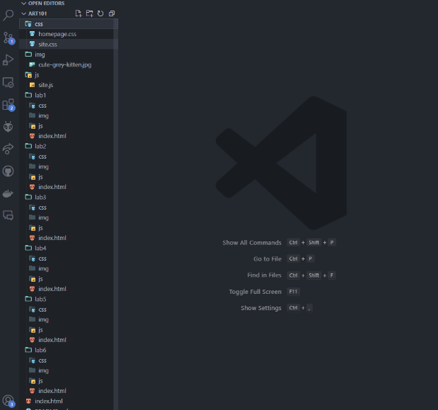

The purpose of this lab is to learn about the file strucutre of websites and how to reference this structure in HTML
Had a hard time figuring out how to reference a directory above the current one.
The lab went well, and as you can see, there were no errors in my HTML.
